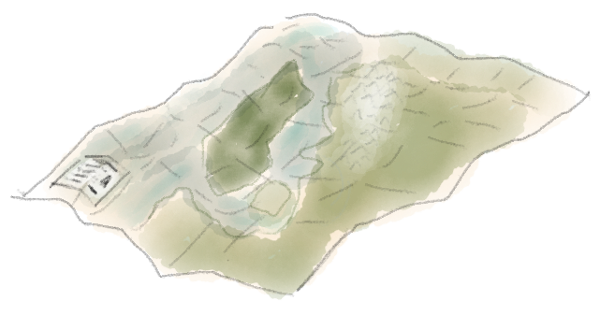
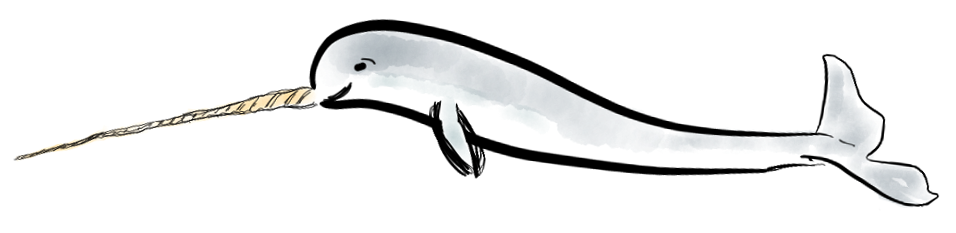

karta
 Python package for geographical data processing. Karta includes vector and raster data types that are coordinate system-aware, implementations of frequently-used of geospatial analysis methods, and the read/write interfaces to several formats.
narwhal
 Narwhal is experimental software for managing oceanographic data. It provides routines for performing common calculations such as geostrophic flow, mixing fractions, EOFs, and baroclinic mode analysis. It also provides a Python ctypes wrapper to the TEOS-10 GSW library.
irlib
Package for analyzing glacier-penetrating radar data, particularly that collected using Blue System's ice-penetrating radar hardware. irlib can be used to read data, perform pre-processing and post-processing steps, and pick reflection events.